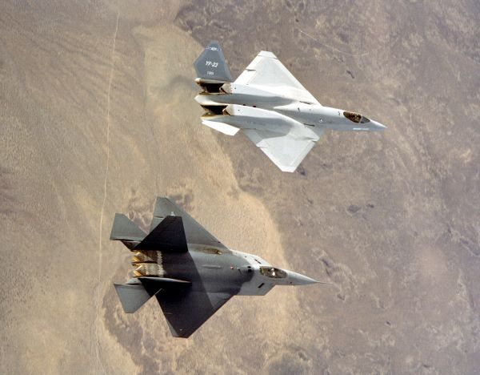

Fading out
The yf-118g was only for a proof of concept. The yf-23 was sidelined in favor of the yf-22 which would be known as the f-22 raptor.

| yf-118g | The goal of the bird of prey isn't to outfly the fighters of its day. Its goals were much furthur than that. They han managed to do it all for under $67 million. Adjusted for inflation to today's currency, Wiechman's Phantom Works successfully designed, prototyped, and flew a clean-sheet stealth platform for around $111 million, less than the cost of a single F-35B today. |
| yf-23 | When the time came to submit the evaluation results from both LockHeed Martian and Northrop Grumman. The Yf-22 was to be the victor. The reason why, the LockHeed and Pratt & Whitney engine designs were rated higher on technical aspects, were considered lower risks, and were considered to have more effective program management. In addition the YF-22 was seen as more adaptable to the Navy, but was abandoned. |